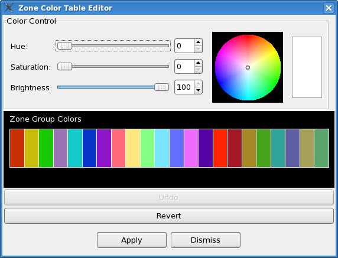

| Tab Color |
Meaning |
| Gray |
Product has not been requested
to be started, or has been reset to the initial state (due to
conflicts). |
| Yellow |
Product is queued for execution
and is pending. |
| Pink |
Product is currently running. |
| Green |
Product has finished and is
ready to be edited if needed. Also used to indicate a Draft has
been loaded and is ready to be edited if needed. |
| Red |
Product has failed or has been
aborted. |
| Blue |
Product has been transmitted and
editor is now locked. |

| Zone Combiner |
When selected, the zone combiner
will appear in the Product Canvas Area. This button is dimmed if
the product doesn't support zone combinations, or while the formatter
is currently running. |
|
| Product Editor |
When selected, the product
editor will appear in the Product Canvas Area. Initially, this
pane is blank. When the product has finished generation, the
contents of the generated product will appear in the canvas. This
button is dimmed until the formatter has completed. |
|
| Output Log |
When selected, the output from
the formatter execution will appear in the Product Canvas Area.
Initially this pane is blank. Only when the formatter has
completed, will the output log button be undimmed and the contents
available. If you wish to monitor the progress of a formatter
during its execution, please use the Process Monitor. |
|
| Load Draft |
When selected, the Formatter
Launcher is switched to the product editor and the saved draft for the
product is loaded. If there isn't a saved draft, then a
message will be displayed to the forecaster indicating that no draft
exists. |
|
| Run Formatter |
This button will queue the
formatter for execution. Once it is queued, the button will
be dimmed until the product is completed. Queuing a product will
cause the zone combiner, product editor, and output log buttons to be
dimmed. |
|
| Stop Formatter |
This button is available during
the execution of a formatter. If selected, the formatter will be
aborted. |
|
| Close Tab |
This button will close the tab
and ABORT any running formatter. Use this button only after the
formatter is complete and you have stored or sent the product, or data
loss will occur. |
| Option |
Meaning |
| Normal: NoVTEC |
Product will be formatted
normally (no test wording), and will not contain VTEC. |
| Normal: O-Vtec |
Product will be formatted
normally (no test wording), and will contain Operational VTEC (O-code). |
| Normal: E-Vtec |
Product will be formatted
normally (no test wording), and will contain Experimental VTEC (E-code). |
| Normal: X-Vtec |
Product will be formatted
normally (no test wording), and will containg Experimental in an
Operational Product VTEC (X-code). |
| Test: NoVTEC |
Product will be formatted with
test wording, and will not contain VTEC. |
| Test: T-Vtec |
Product will be formatted with
test wording and will contain Test VTEC (T-code). |
| Message
Contents |
Significance |
Description |
| Formatters Queued: [prod1,
prod2, prod3] |
Regular |
Indicates that formatters have
been queued for execution. |
| Map mapname not available |
Urgent |
Indicates that the zone combiner
could not find or load the map background required by the zone
combiner. The map background is defined in the
Definition['mapNameForCombinations'] of each product formatter needing
combinations. No zone combinations may be changed for the product. |
| Bad format in Combo file: combofilename |
Significant |
The user has attempted to load a
previously saved combinations file from the Combo Sets -> Load menu,
and the format of the combinations file is corrupted. The zone combiner
may still be used, but the current set of combinations is cleared. |
| Combo file has python syntax
errors: combofilename |
Significant |
The product's combination file was retrieved from EDEX, but could not be decoded. The zone combiner may still be used, but the current set of combinations is cleared. |
| Combo file is not in combo
format: combofilename |
Significant |
The retrieved combination file (from EDEX) was not in the correct format, i.e., not a list of tuples containing a list of zones and a label. The zone combiner may still be used, but the current set of combinations is cleared. |
| Combinations file saved: combofilename |
Regular |
Indicates that a combinations
file was saved. If a GFE red banner appears, then there may have
been a problem with the save. |
| Missing Color file or errors in
Color file |
Significant |
The color file for the zone
combiner was not found or there were errors in the color file. |
| Removed Unknown Edit Areas: [ea1, ea2, ea3...] |
Significant |
Informs the user that the
combinations file contained zones that were not in the map background
assigned to the product, and thus these names have been removed from
the combinations file. |
| Missing zones have been added [ea1, ea2, ea3...] |
Regular |
Zones identified on the map
background but not included in the combinations file have been added to
the combinations file as individual zones, i.e., not combined. |
| Save... |
Brings up the SaveComboSets
Dialog allowing the user to save the current set of combinations for
later retrieval. Only those combinations that apply to the
current map background are displayed. The user can select an
existing name (to overwrite a combo) or type in a new name.
Pressing "Save" will save the combinations. |
|
| Load |
Loads in a saved set of
combinations. Another menu will be displayed showing the list of
saved combinations. |
|
| Delete |
Brings up the DeleteComboSets
Dialog allowing the user to delete saved sets of combinations.
Only those combinations that apply to the current map background are
displayed. The user can select an existing name from the list and
then press "Delete" to delete the combination. |
| Clear |
Removes
all zone combinations from the zone combiner. |
|
| Revert |
Reverts
the zone combinations to the last saved (e.g., last applied)
combination setup. |
|
| Examine/Clear Groups... |
Brings up a dialog which is used
to clear zone groupings. This dialog can also be used to examine
the currently defined set of zone groupings. |
|
| Shuffle Groups... |
Brings up a dialog which is used
to shuffle (move the order) of groups. Multiple selections
may be made and the group will move top/down together. The Up and
Down buttons move the selection one step at a time. The Top and
Bottom move the selection to the top or bottom of the groups. |
|
| Include All Zones |
If
include all zones is selected, then all zones will be part of the
combinations file. If Include All Zones is off, then zones that
are not part of a specific combination will be stand alone, or will be
indicated as not included. Generating a product with some zones
that aren't included will result in a product that does not represent
all of the zones. Toggling Include All Zones on will take all
zones that were previously not included and place them as individual
zones. |
|
| Label Zones |
If Label
Zones is selected, then the zone label identifiers will be placed for
each zone on the map background. |
|
| Label Zone Groups |
If Label
Zone Groups is selected, then the zone grouping numbers will appear on
the map background. Zone groups are counted from 1. |
|
| Zone
Colors... |
The Zone Colors... selection
brings up the Zone Color Table Editor. There is only one color
map for all products, and the size of the color map depends upon the
maximum number of zones that have been color-edited. The color
editor works simlarily to the other Color
Table Editors in the GFE. Pressing "Apply" will change
the color mapping of the Zone Combiner as well as save the new color
table to EDEX. |
 |
| Definition['mapNameForCombinations']
= "Zones_PBZ" |
Mandatory |
Defines the map background used
for this product's zone combinations. All edit areas in the
combinations file must match the map backgrounds's attribute
"EDITAREANAME"'s values. |
| Definition['defaultEditAreas'] =
"combinations Name" |
Mandatory |
Defines the combinations file to
be used for this product. If default edit areas is not a
combinations file, i.e., it is a list of edit areas, then the zone
combiner will not be available. |
| Definition['singleComboOnly'] = 1 |
Optional |
If this definition is set to 1,
then the zone combiner will only allow ONE combination. Some
products are intentionally restricted for this capability. |
| Definition['subDomainUGCs'] =
["ugc1", "ugc2", "ugc3"] |
Optional |
Limits the zone combinations to
just those zones listed in the subDomainUGCs entry. This is
normally only used for those sites whose domain is split into several
products. |
| File |
Save File... |
Brings up a file chooser to allow the user to save the contents of the text buffer to a disk file. The default location is defined in the Definition['outputFile'] part of the formatter. |
| Store... |
Brings up an entry field
containing the 8 or 9-letter PIL (Product Inventory List) that will
be used to store the product into the AWIPS text database.
The default pil is defined in the Definition['textdbPil'] part
of the formatter. Use with caution: Saving to the text
database will cause triggers for that PIL if they have been
defined. This button is colored Blue when in practice mode and
the product won't get stored to the AWIPS text database. Normally
the button is gray. The user can change the AWIPS Product ID if necessary, and then presses the "Store" button to store the product. The Store Countdown timer counts down from 5 seconds giving the user the chance to abort the store operation. If the operation is not aborted, the product will be stored into the AWIPS text database. Use with caution: Saving to the text database will cause triggers for that PIL if they have been defined. If the store was not successful, then an error dialog is raised which contains the traceback on the store failure. |
|
| Transmit... |
Brings up an entry field
containing the 9 or 10-letter AWIPS WAN PIL
(Product Inventory List) that will be used to transmit the product onto
the AWIPS WAN. The product is also stored into the text database
during this operation. The default pil is defined in the
Definition['awipsWANPil'] part of the formatter. This button is
colored RED if live transmission is enabled and colored BLUE if live
transmission is disabled due to practice mode. |
|
| Print |
Sends the contents of the editor
to the lpr command. This should cause the contents of the editor
to be printed. However, the lpr command must be configured at the
system level for this to work. |
|
| Load Draft |
This option only appears for
product tabs. It retreives a previously saved draft and places it
into the product editor for editing. If there is no previously
saved draft, a message is displayed to the forecaster. |
|
| Save Draft |
This option only appears for
product tabs. It saves the current text in the editor along with
the product definition for later callup with Load Draft. |
|
| Open File |
This option only appears for the
"Product Editor"tab. It allows you to bring any local file into
the text editor. Products brought into this window are set to routine
products with an option to set them to Corrected, Updated, Delayed, or
Resend mode through the "Type" pulldown menu choice at the bottom of
the Formatter Launcher window. |
|
| Load Product / Make Correction |
This option only appears for the
"Product Editor" tab. It allows you to specify a pil, then
retrieves the product from the AWIPS text database and loads it into
the editor. The editor is placed into Resend mode automatically
when selecting this option. Typing in the product changes the mode to
Corrected automatically. |
|
| Edit |
Undo |
Undoes the last edit operation. |
| Redo |
Undoes the Undo. |
|
| Cut |
Cuts the selected text from the
buffer and saves it temporarily for pasting. |
|
| Copy |
Copies the selected text and
saves it temporarily for pasting. |
|
| Paste |
Pastes the Cut or Copied text at
the cursor location. |
|
| Find... |
Brings up the Find dialog,
allowing the user to find words. There are many options
available, such as backwards and forwards searches, regular expression
or exact searches, ignoring case, starting at the start, end, or at the
cursor position. |
|
| Replace... |
Brings up the Replace dialog,
allowing the user to find and replace words. Various options are
available to find and replace forwards, backwards, using regular
expressions or exact matches, and starting at the beginning, end, or
cursor location. |
|
| Spell Check... |
Brings up the spell
checker. As each mispelled word is found, suggestions are
provided and the user can choose the suggestion or type in the correct
spelling. Capabilities are provided to add a word to your
personal dictionary, or to ignore the mispelling. |
|
| Wrap Selected |
Rewraps the selected portion of
the product based on the wrap length. You probably will want to
wrap paragraph by paragraph rather than selecting the entire
text. The Product Editor does understand certain types of
paragraphs, such as blank lines denoting paragraphs and ".xxx..."
syntax such as ".TONIGHT..." as paragraphs. |
|
| Options |
Auto Wrap |
Enables/disables automatic
wrapping while typing. The default value may be set through the
gfe configuration file on a per-pil basis. |
| Wrap Length |
Specifies the wrap length. |
|
| CallToActions |
Hazard... |
Based on the editor insertion
point which defines the segment, brings up the possible set of call to
action statements for the VTEC hazards identified within the
segment. The user selects a call to action and the text is
inserted at the insertion point in the editor. Call to action
statements are configurable through the CallToActions
TextUtility. If the cursor is not in a segment that has VTEC
hazards, then the Call To Actions dialog will be empty. The text
appearing in the dialog is either the actual Call To Action text or a
descriptive string, depending upon the Call To Action entry format. |
| Product... |
Based on the editor insertion
point, brings
up the set of product-specific call to action statements.
The user
selects a call to action and
the text is inserted at the insertion point in the editor. |
|
| Generic... |
Based on the editor insertion
point, brings
up the set of generic call to action statements. The user
selects a call to action and
the text is inserted at the insertion point in the editor. Call to
action statements are configurable through the CallToActions
TextUtility. |
|
| Help |
Tab Color Key... |
Displays the various Product Tab
colors and their meaning. |
| Save Draft |
Saves the current text and
product definition to EDEX. The name of the file
is based on the Definition['awipsWANPil']. This allows
other workstations to access the text/product to continue edits. |
| Transmit |
Brings up an Transmit Dialog containing the 9 or 10-letter AWIPS WAN PIL (Product Inventory List) that will be used to transmit the product onto the AWIPS WAN. The product is also stored into the text database during this operation. The default pil is defined in the Definition['awipsWANPil'] part of the formatter. If live transmission is enabled, then this button is RED. If live transmission is disabled, as in PRACTICE mode, then this button is BLUE. In practice mode, this action emulates the normal sending out of the product via the AWIPS WAN, the receipt of the product via the SBN, and the running of the VTEC Decoder. |
| The Check button will rescan the
text in the product editor. It searches for framing codes and
rehighlights the framing section ("red" is the default color). It
updates the transmission time in the WMOID header block and each UGC
block. It rescans the headlines. It checks the VTEC times
and updates those to the current time. It also checks for invalid
products, which can occur in situations when the ending VTEC time is
earlier than the present time. If the VTEC is determined to be
invalid, then the editor is disabled and a red banner message is
displayed. |
|
| Type |
This pulldown menu provides the
type of the product. Changing the product to AAA, AAB, or AAC
will result in the "UPDATED" wording to be appended to the product's
MND header. Changing the product to RRA, RRB, or RRC results in
the "DELAYED" wording to be appended to the product's MND header.
Changing the product to "res" indicates this is a retransmission, no
"bbb" field is included in the WMO line, but the MND header will
contain "RESENT". "rou" indicates a normal
type of product. When the editor is put into Correction
Mode,
only the CCA, CCB, and CCC options are available and the MND header is
appended with CORRECTED. |
| Product Expiration Time |
The user may adjust the product
expiration time in the segments by changing the selectors in 15 minute
increments. The interval plus the calculated expiration time is
shown on the interface. Each segment will receive the
earlier of the specified time, 1 hour if a segment only contains a CAN
VTEC code, or the end of any event. |
| Type Field |
Meaning |
| rou |
Routine product, no additional
words added to the MND header. |
| res |
Product that has been
resent. The word RESENT is added to the MND header. This is
only available from the "blank" product editor tab. |
| AAA... |
Updated product. The word
UPDATED is added to the MND header. |
| RRR... |
Delayed product. The word
DELAYED is added to the MND header. |
| CCC... |
Corrected product. In the
blank Product Editor with a loaded product from
the AWIPS text database, the word CORRECTED is added to the MND header
and changes made to any segment text will result in the corresponding
VTEC lines to indicate a "COR" action. This is only available
from the "blank" product editor. |